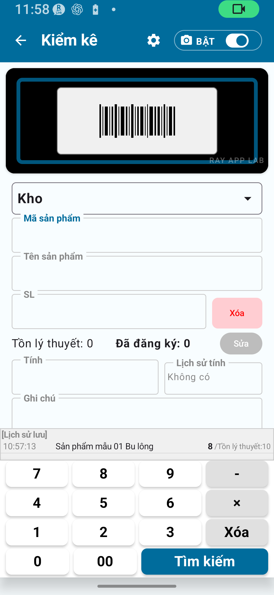

Những gì có thể làm, giới hạn, hướng dẫn từng bước và quy trình làm việc khuyến nghị
Chủ đề trong trang này:
Kiểm kê gói miễn phí có thể làm gì / Giới hạn gói miễn phí / Quy trình kiểm kê từng bước / Nhập mã vạch, tên sản phẩm & số lượng / Xử lý vị trí / Xem lại lịch sử / Giới hạn xuất CSV / Các chức năng không có trong gói miễn phí / Quy trình làm việc khuyến nghị
CHƯƠNG 1
Tổng quan kiểm kê gói miễn phí
Kiểm kê là quá trình đếm hàng hóa thực tế và ghi lại số lượng. Gói miễn phí cho phép bạn thử quy trình kiểm kê cơ bản.
Quy trình kiểm kê là: Quét sản phẩm → Nhập số lượng → Lưu → Xem lại lịch sử.
💡 Kiểm kê là gì?
Kiểm kê ghi lại số lượng bạn tự đếm thực tế (số đếm thực tế). Đây là thao tác riêng biệt với chức năng nhập hàng, xuất hàng và chuyển kho của Quản lý tồn kho — không nên nhầm lẫn hai mô-đun này.
Tính năng kiểm kê gói miễn phí
Nhập hoặc quét mã sản phẩm / mã vạch
Nhập tên sản phẩm
Nhập số lượng đếm thực tế
Nhập ghi chú / ghi nhớ
Xem lại lịch sử kiểm kê
Lưu và xuất trong giới hạn gói miễn phí

Hình 1-1 Màn hình kiểm kê chính (Gói miễn phí)
CHƯƠNG 2
Giới hạn gói miễn phí
Các hạn chế sau áp dụng cho gói miễn phí.
Mục
Giới hạn gói miễn phí
Cách xóa giới hạn
Bản ghi danh mục
Đến 30
Gói Tiêu chuẩn hoặc Gói Đầy đủ
Bản ghi lịch sử kiểm kê
Đến 30
Gói Tiêu chuẩn hoặc Gói Đầy đủ
Bản ghi xuất
Đến 30
Gói Tiêu chuẩn hoặc Gói Đầy đủ
Khóa xoay màn hình
Không khả dụng
Gói Tiêu chuẩn trở lên
Quy tắc mã chi tiết
Không khả dụng
Gói Đầy đủ
Quy tắc vị trí chi tiết
Không khả dụng
Gói Đầy đủ
Cài đặt camera chi tiết
Không khả dụng
Gói Đầy đủ
Xuất CSV mở rộng
Không khả dụng
Gói Đầy đủ
⚠ Lưu ýKhi đạt giới hạn 30 bản ghi, việc lưu hoặc xuất có thể không khả dụng. Lên kế hoạch nâng cấp lên Tiêu chuẩn hoặc Đầy đủ trước khi đạt giới hạn.
🔍 Xác minhKiểm tra Google Play để biết giá hiện tại và điều khoản mua — hướng dẫn này không nêu giá dứt khoát.
CHƯƠNG 3
Hướng dẫn kiểm kê từng bước
Quy trình kiểm kê cơ bản
Nhấn Kiểm kê trên màn hình chính.
Quét mã vạch, hoặc nhập thủ công mã sản phẩm.
Tên sản phẩm xuất hiện. Nếu mã chưa đăng ký, nhập tên thủ công.
Xác nhận hoặc chọn vị trí (kho, cửa hàng, v.v.).
Nhập số lượng đã đếm thực tế.
Nhập ghi chú nếu cần.
Nhấn Lưu để ghi mục nhập vào lịch sử kiểm kê.
Xác nhận mục nhập đã lưu trong lịch sử kiểm kê.
🚨 Quan trọngLuôn kiểm tra số lượng trước khi lưu. Lỗi nhập có thể dẫn đến sai lệch với số liệu tồn kho. Nếu cần chỉnh sửa sau khi lưu, hãy làm theo hướng dẫn hiển thị trong ứng dụng.
Đếm nhiều sản phẩm liên tiếp
Sau khi lưu mục đầu tiên, quét mã vạch sản phẩm tiếp theo (hoặc nhập mã).
Lặp lại bước 2–7.
Sau khi nhập xong tất cả sản phẩm, xem lại toàn bộ lịch sử kiểm kê.
💡 MẹoBạn không cần hoàn thành kiểm kê trong một phiên. Nếu bạn đóng ứng dụng giữa chừng, các mục đã lưu vẫn được giữ lại.
Hình 3-1 Màn hình lịch sử kiểm kê
CHƯƠNG 4
Nhập mã vạch, tên sản phẩm & số lượng
Quét mã vạch
Khởi chạy camera và hướng vào mã vạch để quét tự động. Nếu quét thất bại, di chuyển đến nơi có ánh sáng tốt hơn hoặc chuyển sang nhập thủ công.
Nhập thủ công mã sản phẩm
Nếu không có mã vạch, nhập trực tiếp mã sản phẩm vào trường mã. Đối với mã đã đăng ký, tên sản phẩm sẽ tự động điền.
Nhập tên sản phẩm
Đối với mã chưa đăng ký, nhập tên sản phẩm thủ công. Tên được nhập sẽ ghi vào lịch sử kiểm kê. Lưu ý giới hạn bản ghi khi vận hành mà chưa đăng ký dữ liệu sản phẩm.
Nhập số lượng đếm thực tế
Nhập số lượng bạn đã đếm thực tế dưới dạng số. Hãy kiểm tra lại giá trị đã nhập trước khi lưu.
⚠ Lưu ýNhập chính xác số lượng bạn đã đếm. Lỗi nhập gây ra sai lệch tồn kho. Luôn xác nhận con số trước khi lưu.
Nhập ghi chú
Bạn có thể nhập tự do ghi chú công việc hoặc nhận xét. Chúng được ghi cùng với mục nhập lịch sử kiểm kê.
Trường
Mô tả
Bắt buộc / Tùy chọn
Mã vạch / Mã sản phẩm
Mã dùng để xác định sản phẩm
Bắt buộc
Tên sản phẩm
Nhập khi mã chưa đăng ký
Bắt buộc có điều kiện
Vị trí
Nơi đang thực hiện kiểm kê
Tùy thuộc cài đặt
Số lượng đếm thực tế
Số lượng thực tế đã đếm
Bắt buộc
Ghi chú
Ghi chú hoặc nhận xét
Tùy chọn
CHƯƠNG 5
Xử lý vị trí
Gói miễn phí dùng cài đặt vị trí đơn giản hóa. Các vị trí mặc định là "Kho" và "Cửa hàng".
Chế độ kiểm kê
Vị trí khả dụng
Ví dụ sử dụng
Đơn giản A
Chỉ kho
Quản lý một kho duy nhất
Đơn giản B
Kho + Cửa hàng
Kiểm kê cả kho và cửa hàng
Đơn giản C
Chỉ cửa hàng
Quản lý một cửa hàng duy nhất
Chọn chế độ trong Cài đặt → Cài đặt kiểm kê. Chọn chế độ phù hợp trước khi bắt đầu giúp quy trình kiểm kê suôn sẻ hơn.
💡 MẹoQuản lý vị trí chi tiết (ví dụ: số kệ) là tính năng Gói Đầy đủ. Kích hoạt bằng cách chuyển sang chế độ Chi tiết trong cài đặt.
⚠ Lưu ýDù đã đăng ký vị trí chi tiết, chúng sẽ không hiển thị nếu chế độ vẫn là Đơn giản A/B/C. Bạn cần chuyển sang chế độ Chi tiết.
CHƯƠNG 6
Xem lại lịch sử kiểm kê
Tất cả mục nhập kiểm kê đã lưu có thể xem lại trong Lịch sử kiểm kê.
Những gì bạn có thể thấy trong lịch sử
Ngày và giờ lưu
Mã sản phẩm và tên
Số lượng đếm thực tế đã nhập
Vị trí
Ghi chú
Giới hạn lịch sử gói miễn phí
Gói miễn phí lưu tối đa 30 bản ghi lịch sử kiểm kê. Khi đạt giới hạn, làm theo hướng dẫn trên màn hình. Để sử dụng liên tục, cân nhắc nâng cấp lên Tiêu chuẩn (đến 1.000 bản ghi) hoặc Gói Đầy đủ (không giới hạn).
⚠ Lưu ýGói miễn phí giới hạn lịch sử ở 30 bản ghi. Vượt quá giới hạn có thể ngăn lưu mục nhập kiểm kê mới.
CHƯƠNG 7
Giới hạn xuất CSV
Gói miễn phí giới hạn số bản ghi có thể xuất sang CSV.
Mục
Gói miễn phí
Gói Tiêu chuẩn
Gói Đầy đủ
Bản ghi xuất
Đến 30
Đến 300
Không giới hạn
Xuất đầy đủ cột
Hạn chế
Hạn chế
Xuất CSV mở rộng
💡 MẹoCSV kiểm kê có hàng tiêu đề theo ngôn ngữ ở dòng đầu tiên. Các tệp CSV xuất có thể mở và xem trong Excel hoặc Google Sheets.
⚠ Lưu ýCSV tóm tắt kiểm kê không bao gồm cột ngày/giờ hoặc vị trí. Xuất chi tiết theo vị trí và ngày là tính năng Gói Đầy đủ.
CHƯƠNG 8
Các chức năng không có trong gói miễn phí
Tính năng
Gói cần thiết
Hơn 30 bản ghi danh mục
Kiểm kê Tiêu chuẩn trở lên
Hơn 30 bản ghi lịch sử
Kiểm kê Tiêu chuẩn trở lên
Xuất hơn 30 bản ghi
Kiểm kê Tiêu chuẩn trở lên
Khóa xoay màn hình
Kiểm kê Tiêu chuẩn trở lên
Cài đặt quy tắc mã chi tiết
Gói Kiểm kê Đầy đủ
Cài đặt quy tắc vị trí chi tiết
Gói Kiểm kê Đầy đủ
Cài đặt quét camera chi tiết
Gói Kiểm kê Đầy đủ
Xuất CSV mở rộng
Gói Kiểm kê Đầy đủ
Áp dụng kết quả kiểm kê vào tồn kho
Gói Kiểm kê Đầy đủ
CHƯƠNG 9
Quy trình làm việc khuyến nghị cho người dùng gói miễn phí
Phù hợp nhất cho hoạt động quy mô nhỏ
Nếu bạn có 30 sản phẩm trở xuống, gói miễn phí đủ để kiểm kê cơ bản liên tục.
Thường xuyên xuất CSV để xây dựng hồ sơ
Xuất sang CSV trước khi gần đạt giới hạn 30 bản ghi lịch sử. Điều này tích lũy hồ sơ của bạn ở định dạng máy tính hoặc bảng tính.
Đặt chế độ Đơn giản (A/B/C) trước
Chọn chế độ phù hợp (Đơn giản A/B/C) trong Cài đặt → Cài đặt kiểm kê trước khi bắt đầu. Điều này giúp mỗi phiên kiểm kê suôn sẻ hơn.
Lên kế hoạch nâng cấp khi gần đạt giới hạn
Khi bản ghi danh mục và lịch sử gần đạt 30, cân nhắc nâng cấp lên Gói Tiêu chuẩn. Khi đạt giới hạn, việc lưu hoặc xuất có thể không tiếp tục được.
💡 MẹoThực hành với dữ liệu mẫu (tạo từ Cài đặt) trước khi đăng ký sản phẩm thực tế.
📌 Điểm chính của chương
Kiểm kê gói miễn phí phù hợp cho hoạt động quy mô nhỏ với tối đa 30 mặt hàng.
Quy trình là: Quét → Nhập số lượng → Lưu → Xem lại lịch sử.
Vị trí được đặt qua Đơn giản A/B/C. Vị trí chi tiết cần Gói Đầy đủ.
Xuất CSV giới hạn 30 bản ghi. Tệp xuất không bao gồm cột ngày hoặc vị trí.
Khi gần đạt giới hạn 30 bản ghi, cân nhắc nâng cấp lên Tiêu chuẩn hoặc Gói Đầy đủ.
Kiểm kê tách biệt với nhập hàng và xuất hàng trong Quản lý tồn kho — đừng nhầm lẫn.
🔍 Lưu ý trước khi sử dụng
Trước khi lưu, hãy kiểm tra mã sản phẩm, tên sản phẩm, vị trí và số lượng đã nhập.
Nếu cần chỉnh sửa mục kiểm kê sau khi lưu, hãy làm theo hướng dẫn hiển thị trong ứng dụng.
Khi gần đạt giới hạn 30 bản ghi, hãy xuất CSV hoặc cân nhắc nâng cấp gói trước khi tiếp tục.
Thông tin mới nhất về giới hạn, gói và thao tác luôn được ưu tiên theo màn hình trong ứng dụng.